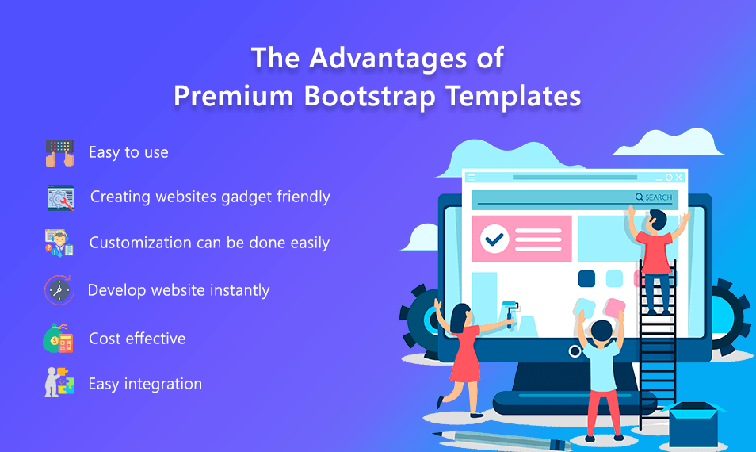

Bootstrap
 Bootstrap is a free and open-source CSS framework directed at responsive,
mobile-first front-end web development. It contains CSS- and (optionally) JavaScript-based design templates for typography,
forms, buttons, navigation, and other interface components.
As of August 2021, Bootstrap is the tenth most starred project on GitHub, with over 152,000 stars,
behind freeCodeCamp (over 328,000 stars), Vue.js framework, React library, TensorFlow and others.
Bootstrapping describes a situation in which an entrepreneur starts a company with little capital, relying on money other than
outside investments. An individual is said to be bootstrapping when they attempt to found and build
a company from personal finances or the operating revenues of the new company.
Bootstrap is a free and open-source CSS framework directed at responsive,
mobile-first front-end web development. It contains CSS- and (optionally) JavaScript-based design templates for typography,
forms, buttons, navigation, and other interface components.
As of August 2021, Bootstrap is the tenth most starred project on GitHub, with over 152,000 stars,
behind freeCodeCamp (over 328,000 stars), Vue.js framework, React library, TensorFlow and others.
Bootstrapping describes a situation in which an entrepreneur starts a company with little capital, relying on money other than
outside investments. An individual is said to be bootstrapping when they attempt to found and build
a company from personal finances or the operating revenues of the new company.
USes of Bootstrap
 Easy to use: Anybody with just basic knowledge of HTML and CSS can start using Bootstrap
Responsive features: Bootstrap's responsive CSS adjusts to phones, tablets, and desktops
Mobile-first approach: In Bootstrap 3, mobile-first styles are part of the core framework
Browser compatibility: Bootstrap is compatible with all modern browsers (Chrome, Firefox, Internet Explorer, Edge, Safari, and Opera)
Bootstrap offers a lot of helper classes that make development of a responsive website easy and fast.
Easy to use: Anybody with just basic knowledge of HTML and CSS can start using Bootstrap
Responsive features: Bootstrap's responsive CSS adjusts to phones, tablets, and desktops
Mobile-first approach: In Bootstrap 3, mobile-first styles are part of the core framework
Browser compatibility: Bootstrap is compatible with all modern browsers (Chrome, Firefox, Internet Explorer, Edge, Safari, and Opera)
Bootstrap offers a lot of helper classes that make development of a responsive website easy and fast.
Adavtages

Web designers and web developers like Bootstrap because it is flexible and easy to work with.
to Customize Bootstrap
Change the existing Bootstrap styles such as colors, fonts, or borders.
change the Bootstrap grid layout such as breakpoints or gutter widths.
Extend Bootstrap classes with new custom classes.
Its main advantages are that it is responsive by design,
Low cost of entry: Bootstrapping is cheap—working with your own money means that super-efficiency is necessary.
You are more aware of the costs involved in the day-to-day running of the business and start operating your company on a lean business model.
You call the shots: Without any external investors the founders’ equity and control over the company are not diluted.
The founders are their own bosses and are responsible for all crucial decisions in operating
and growing the company. This can ensure that the business is moving in the direction desired,
according to the founders’ vision and cultural values, without any investor influence,
and when successful, ultimately means keeping the profits for themselves.
Good documentation and community support
Loads of free and professional templates, WordPress themes and plugins
Great grid system
Maintain Responsibility
As the sole investor in your company, you maintain sole responsibility as well.
Most people in charge of their own companies will give it their all.
Pick the Focus
When you are the ultimate boss, you pick the direction of your startup.
This isn’t always possible if you obtain funding elsewhere.